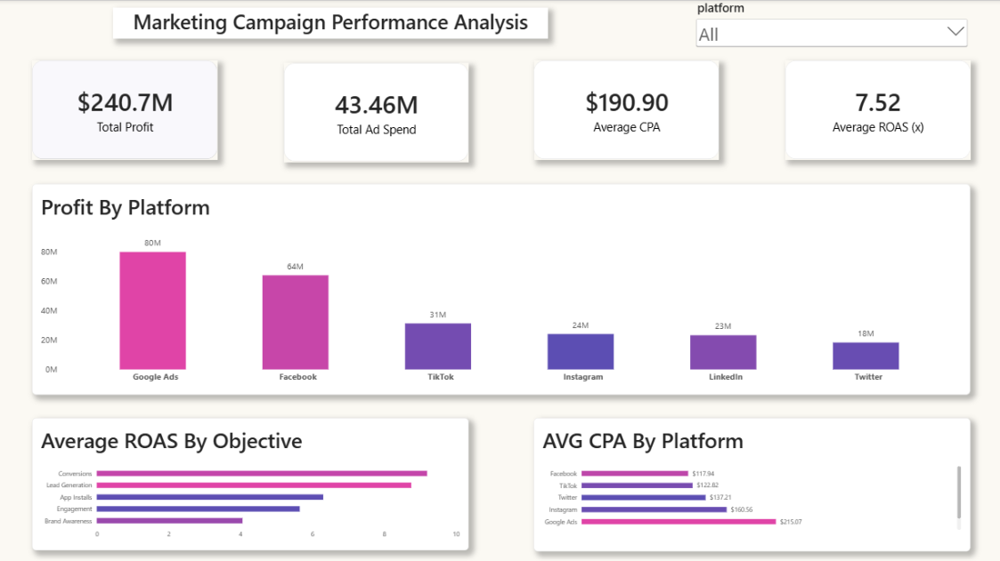

Marketing Campaign Performance Analysis
PostgreSQL • SQL • Power BI • Marketing Analytics
Executive Summary
This project analyzes digital advertising campaign performance using PostgreSQL, SQL, and Power BI to evaluate marketing profitability, customer acquisition efficiency, and return on advertising spend.
The objective was to identify which advertising platforms and campaign objectives generated the strongest business results and where future advertising budget should be allocated. Through data validation, SQL analysis, KPI development, dashboard design, and business storytelling, raw campaign-level data was transformed into actionable recommendations for marketing leadership.
Dashboard Preview

Business Questions
This project focused on answering five key business questions:
- Is advertising investment generating profitable business outcomes?
- Which advertising platforms generate the greatest business value?
- Which campaign objectives generate the strongest return on investment?
- Which advertising platforms acquire customers most efficiently?
- Which platforms generate the strongest profit efficiency per advertising dollar spent?
Key Findings
Marketing Performance
- Generated approximately $240.7M in profit.
- Total advertising spend was approximately $43.46M.
- Achieved an average ROAS of 7.52x.
- Generated over 655K conversions.
- Produced approximately $5.54 in profit for every $1 invested in advertising.
Insight
Marketing investments generated strong business returns while maintaining reasonable acquisition costs, indicating effective overall advertising performance.
Platform Performance
- Google Ads generated approximately $80M in profit.
- Google Ads contributed approximately 33% of total campaign profit.
- Google Ads and Facebook together generated nearly 60% of total campaign profit.
Insight
A significant portion of profitability was concentrated in Google Ads and Facebook, making them critical drivers of marketing performance.
Campaign Objective Performance
- Conversion campaigns achieved the highest average ROAS at 9.20x.
- Conversion campaigns generated approximately 2.3x greater return on ad spend than Brand Awareness campaigns.
Insight
Conversion-focused campaigns consistently generated the strongest return on marketing investment.
Customer Acquisition Efficiency
- Facebook achieved the lowest CPA at approximately $118 per acquisition.
- LinkedIn recorded the highest CPA at approximately $379 per acquisition.
Insight
Facebook demonstrated the strongest balance between customer acquisition efficiency and profitability.
Profit Efficiency Analysis
- TikTok generated approximately $10.18 in profit per dollar spent.
- Facebook generated approximately $9.39 in profit per dollar spent.
- Google Ads generated the most profit overall but did not generate the highest profit efficiency.
Insight
The highest-profit platform is not always the most efficient platform. Evaluating both scale and efficiency provides a more complete picture of marketing performance.
Technical Process
Data Validation
Process
- Validated row counts
- Reviewed categories and dimensions
- Checked for missing values
- Reviewed KPI calculations
- Performed duplicate record checks
SQL Analysis
Process
Developed SQL queries to evaluate:
- Marketing profitability
- Platform performance
- Campaign objective effectiveness
- Customer acquisition efficiency
- Profit efficiency
- Budget allocation opportunities
Dashboard Development
KPIs Developed
- Total Ad Spend
- Total Profit
- Average ROAS
- Average CPA
Visualizations
- Profit by Platform
- Average ROAS by Campaign Objective
- Average CPA by Platform
Recommendations
Google Ads
Continue prioritizing Google Ads because it generated the highest overall profit and remains the largest contributor to campaign profitability.
Conversion Campaigns
Increase investment in Conversion-focused campaigns due to their superior ROAS performance.
Continue leveraging Facebook as an efficient customer acquisition channel because of its low CPA and strong profitability.
TikTok
Explore opportunities to scale TikTok campaigns strategically due to its industry-leading profit efficiency.
Optimization Opportunities
Review lower-performing platforms and campaign objectives before allocating additional advertising budget.
Tools Used
Database
- PostgreSQL
Querying & Analysis
- SQL
Visualization
- Power BI
Skills Demonstrated
Analytics
- Data Validation
- Data Cleaning
- Data Auditing
- KPI Development
- Marketing Analytics
- ROI Analysis
- Budget Allocation Analysis
Business Intelligence
- Dashboard Development
- Executive Reporting
- Data Storytelling
- Business Recommendations
Technical
- PostgreSQL
- SQL
- Power BI
Project Workflow
Business Question
↓
Data Audit & Validation
↓
SQL Analysis
↓
KPI Development
↓
Dashboard Design
↓
Insight Generation
↓
Business Recommendations
Final Takeaway
This project demonstrates how raw advertising campaign data can be transformed into business recommendations through data validation, SQL analysis, KPI development, dashboard design, and executive storytelling.
The analysis identified clear opportunities to improve future marketing performance by prioritizing high-profit platforms, high-ROAS campaign objectives, efficient acquisition channels, and high-efficiency advertising investments.